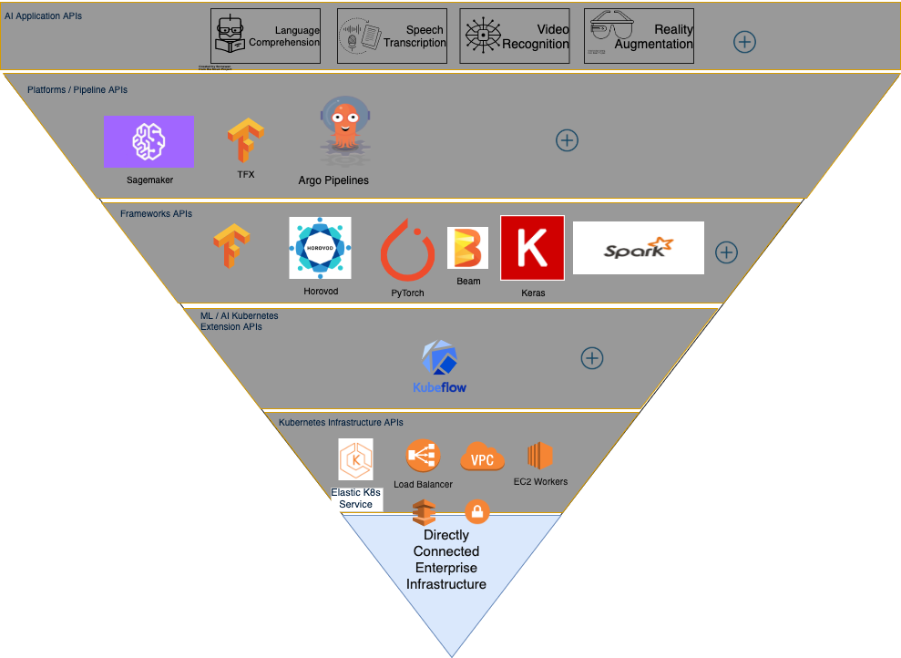
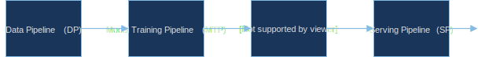
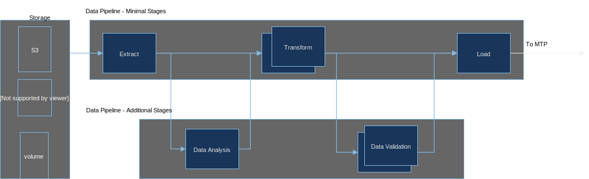
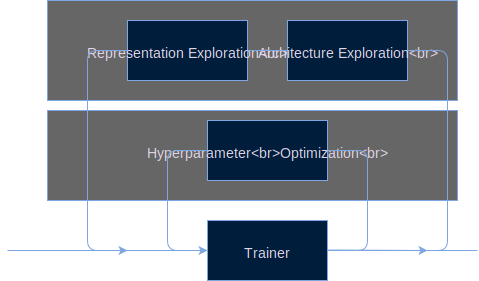
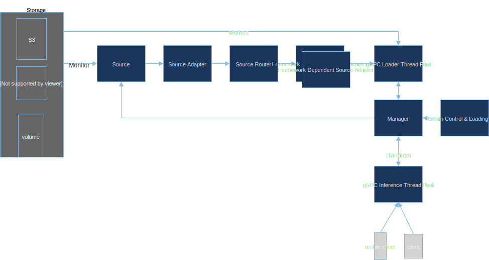
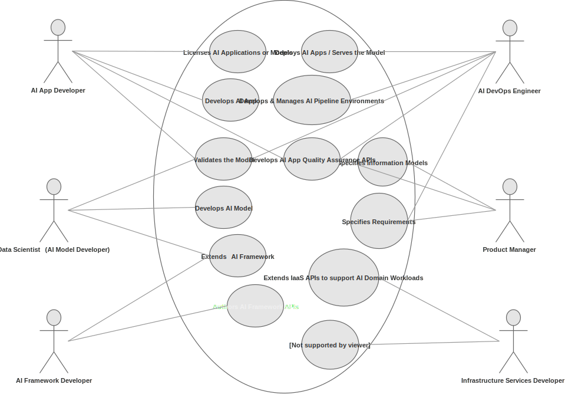

ML Pipelines
Contents
ML Pipelines¶
As we have seen from the syllabus, this course approaches the subject from an applied perspective - this means teaching concepts but at the same time looking how these concepts are applied in the industry to solve real world problems. In this respect here we take an architecture driven approach, presenting the components in a form of a software stack but also how the components are mechanized in what we call Pipelines to provide the required utility to applications. For a complete overview of real world ML pipelines used today we will go through this paper that describes a production grade pipeline.
AI Stack circa 2019
The four pipelines of an end-to-end ML platform¶
 Example of end to end pipeline - serial arrangement
 Example of Data Pipeline (DP)
 Example of Model Training Pipeline (MTP)
 Example of Model Evaluation and Validation Pipeline (MEVP)
Example of Model Evaluation and Validation Pipeline (MEVP)
 Example of Serving Pipeline (SP)
Roles in data science product development¶
 Who data scientists need to interact with, during the development of AI systems?
“Any organization that designs a system (defined broadly) will produce a design whose structure is a copy of the organization’s communication structure.” http://www.melconway.com/Home/Conways_Law.html
“We do research differently here at Google. Research Scientists aren’t cloistered in the lab, but instead they work closely with Software Engineers to discover, invent, and build at the largest scale.”
Contrast this to an organizational structure that isolates researchers from product development. What about Alphabet’s X https://x.company/ ?
Landscape of the data science ecosystem¶
Due to the complexity and common interest to addresses industrial players are partnering to define and implement the necessary components for the complete automation of AI pipelines. This work is going in within the Linux Foundation AI (sub)Foundation amongst many other open source communities.